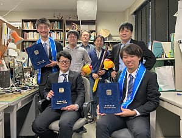
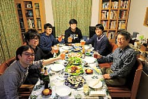
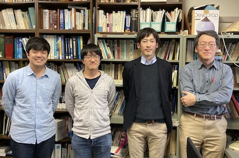
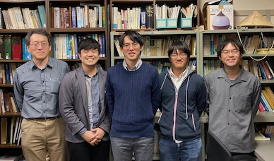
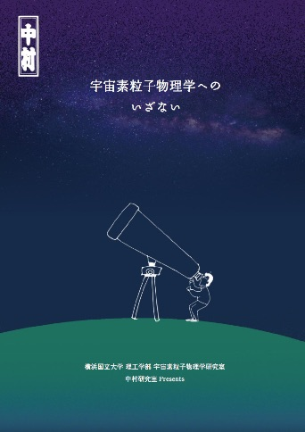
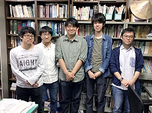

Update : 7 Jan. 2023
Update : 7 Jan. 2023中村研ニュース（2019年度）
更新中です．．．
修士生２名と学部生４名が修了・卒業［2020年3月］
 3月24日（木）に証書の授与式が行なわれ，中村研も修士生２名と学部生４名が無事に修了・卒業して学位が授与されました。 修了・卒業したメンバーは次の通りで，卒業した４年生のうち１人はそのまま進学して中村研に残ります。- 修士修了
- 越智 紘樹，廣瀬 開陽
- 学部卒業
- 川島 佑太，前田 尚哉，山田 祥太，吉田 裕哉
中村宅で中村研の忘年会［2019年12月］
 12月27日（金）？に，中村宅に在学生の面々が集まり，中村研の忘年会のひとときを楽しく過ごしました。OBのあべ松高志氏が来訪［2019年12月］
12月17日（火）に，中村研OBのあべ松高志氏（現・ルネサスエレクトロニクス）が来訪しました。左は会社名の入ったお菓子です。OBの山下徹氏が来訪［2019年12月］
12月12日（木）に，中村研OBの山下徹氏（現・AGC）が来訪しました。2019年度はオープンラボを担当［2019年6月］
6月15日（土），16日（日）は，横浜国立大学のオープンキャンパスがあり，中村研はオープンラボを行ないます。その関係で，以下に研究紹介のパンフレットの情報を再掲載しました。【再掲】研究室の紹介パンフレット第２版［2019年6月］
中村研究室の紹介パンフレット「宇宙素粒子物理学へのいざない」（元・京都工芸繊維大学大学院の宇都宮里梨子氏の全面的なご協力とデザインによる）が，若干手直しされて第２版になりました。なお，同じもののデジタル版もここに公開しています。対応するQRコードもご利用下さい。OBの武田紘樹氏と中野龍之介氏が来訪［2019年6月］
6月14日（金）に，中村研OBの武田紘樹氏（現・東大院D2）と中野龍之介氏（現・東大院M2）が来訪しました。昼前には，最新の重力波研究に関する武田氏のセミナーもあり有意義な時間となりました。M2の廣瀬がチリのPOLARBEAR-2の実験に出張［2019年5月］
4月18日（木）から5月8日（水）まで，博士課程前期２年の廣瀬が，チリのアタカマ高原で進められている宇宙マイクロ波背景放射観測実験POLARBEAR-2の立ち上げ作業を行ないました。今年２回目となります。３名が大学院に進学し，４名が卒研配属しました［2019年4月］
2019年度がスタートし，新Ｄ１が１人，新Ｍ１が２人，新４年生４人が研究室に配属されました。- 藤野 琢郎（D1）
- 菊地 修平（M1）
- 谷山 天晴（M1）
- 川島 佑太（B4）
- 前田 尚哉（B4）
- 山田 祥太（B4）
- 吉田 裕哉（B4）